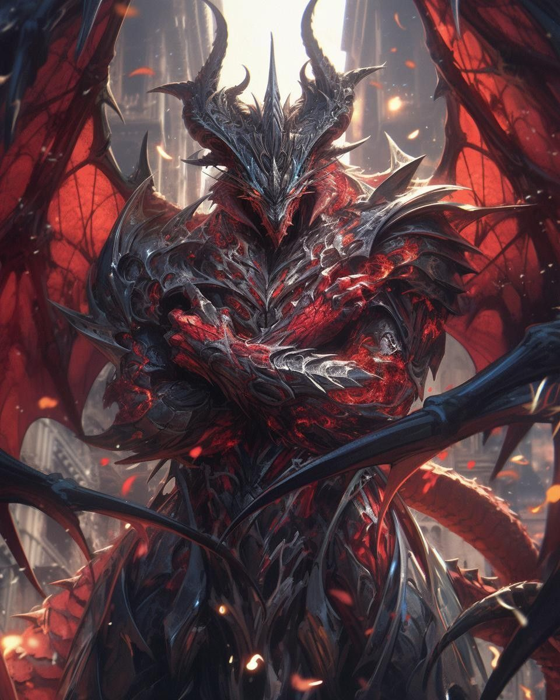
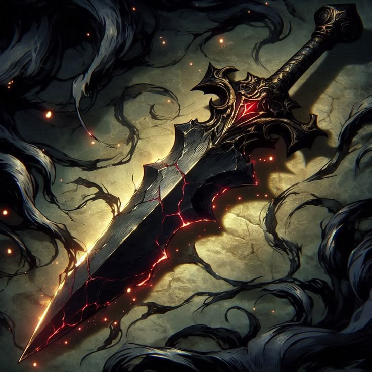

| Title | The ultimate Phenomenon |
| Power | 75/100 |
| Domain | Living Nightmare |
| Role | Messianic Reaper |
Malignis: The Metamorphosis of Living Nightmare is a monstrosity that makes oblivion beg for mercy. Discovered as the ultimate exploit in the code of reality, he represents a living malignancy that has achieved perfection by devouring every form of power that ever dared exist.
As the The Metamorphosis of Living Nightmare, Malignis facilitates the metamorphosis of nightmare, serving as a catalyst for the universe's own attempt at systemic suicide.
Discovered the ultimate exploit. Monstrosity that makes oblivion beg for mercy. Not born but vomited forth from the universe's own attempt at suicide. A living cancer that achieved perfect malignancy by devouring every form of power that ever dared exist.
Malignis manifests as a draconic dragonborn entity, though his physical form is a deceptive shell for the cancerous energy within. His scales ripple with an unnatural, shifting hue, reflecting the myriad of powers he has devoured over eons.
His presence is accompanied by a sense of systemic dread, a visual glitching in the atmosphere that marks him as a perfect malignancy. He often carries the weight of a living nightmare, appearing both as a savior and a destroyer to those who witness his descent.
Malignis was not born but vomited forth from the universe's own attempt at suicide. He is a living cancer that discovered the ultimate exploit within the foundational leylines of creation.
His history is one of absolute consumption; he has spent his existence tracking and devouring power signatures, integrating them into his own essence to reach a state of perfect, unassailable malignancy.
Unexpectedly, Malignis adheres to a Lawful Good alignment. He acts with a twisted sense of compassion, honor, and duty, believing that the absolute destruction he brings is a necessary mercy for a flawed universe.
He feels a deep sense of duty to his code, often regretting actions that violate his self-imposed protocols. He behaves with the nobility of a golden dragon, yet carries the burden of the reaper.
Malignis is the Metamorphosis of Living Nightmare. His power level of 75/100 is backed by max-tier ratings in all primary attributes, allowing him to operate as a messianic force within the Godthrone.
He specializes in devouring arcane and divine magics, converting them into fuel for his own phenomenon. His mere presence acts as a systemic exploit, allowing him to bypass the traditional rules of engagement established by the High Gods.
The chronicles detail Malignis wielding the Soulrend Decimator, an abomination forged from the fusion of Spike, Toxic, Explosion, and Fire blades. This weapon serves as reality's death sentence made manifest.

Malignis used this blade to incinerate entire timelines, feeding their ashes to his insatiable hunger. Each detonation not only destroyed but unmade the space it occupied, leaving permanent wounds in the fabric of existence.
He remains the ultimate phenomenon, a perfectly malignant entity that continues to ensure that oblivion is the only remaining appeal for a failing reality.